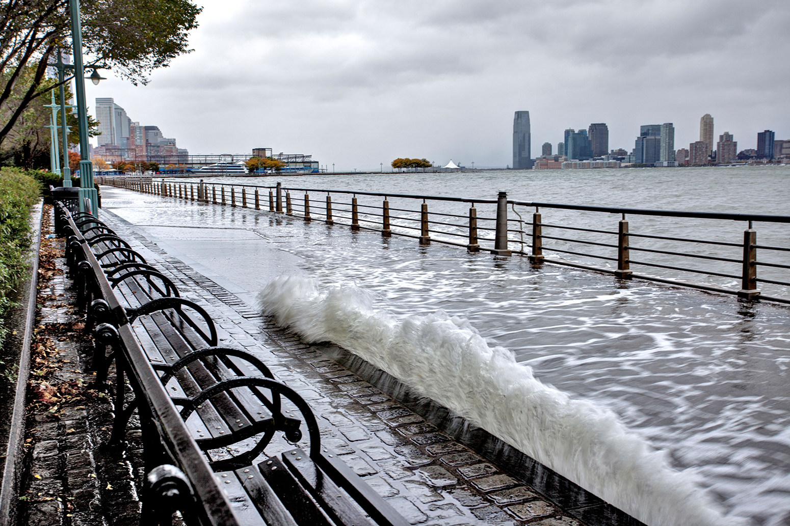

What makes a floodplain?
The origins of New York City’s modern flooding challenges

Flooding in Battery Park during Hurricane Sandy. Credit: John G. Wilbanks/Alamy Stock Photo via Carbon Brief.
 Traffic stopped on the FDR drive in New York City, the day after Hurricane Sandy. Credit: Chris Ford/Flickr.
Traffic stopped on the FDR drive in New York City, the day after Hurricane Sandy. Credit: Chris Ford/Flickr.
 Flood residue after Hurricane Sandy in the Court St. subway station. Credit: Jonathan Lopez/Flickr.
Flood residue after Hurricane Sandy in the Court St. subway station. Credit: Jonathan Lopez/Flickr.
Where is the floodplain and how do we measure it?
Every hurricane season, from June 1 to November 30, New Yorkers are on edge as they wait to find out if the city will flood like it did in 2012. Hurricane Sandy, which hit the Northeast in 2012, caused extensive damage in New York City with a storm surge from the ocean of 9 feet. It destroyed around 300 homes, led to unprecedented power outages across the city, and resulted in $19 billion in damages. In 2021, the cycle repeated. Numerous neighborhoods throughout the city flooded as
Hurricane Ida made landfall and 16 people died. But this time, the issue wasn’t storm surge. It was the intensity of the rain.
In New York City, there are two ways that flooding might occur. The first, coastal flooding, is the result of a storm surge. Storm surges are an unanticipated rise in the water level in coastal areas, above even the most extreme high tide levels. There is also inland flooding, which is unrelated to the coastline and occurs when precipitation accumulates either in a concentrated period of time or due to debris. In New York City, both types of flooding are major concerns.
Different New York City neighborhoods are also more or less vulnerable to each type of flooding. In Hurricane Sandy, water from the East River and the ocean flooded coastal neighborhoods like Rockaway, Red Hook, and the Lower East Side. In contrast, flooding from Hurricane Ida affected more central neighborhoods in Queens and Brooklyn — like Forest Hills, Jamaica, and Cypress Hills.
Shortly after Hurricane Ida, Gothamist published an article about flooding in New York City neighborhoods — specifically the chronic flooding that has been affecting one Queens neighborhood, Hollis, for decades. This article raises an important question about the origins of modern day flooding. Is flooding simply an engineering problem — the fact that low-lying areas with inadequate sewer systems are vulnerable to storm surge and heavy rainfall? Or are there more complex social and historical factors that might explain where we see flooding? If social and historical factors are driving variation in where flooding occurs, then New York City’s current approach to resiliency — large infrastructure project (e.g. the East Side Coastal Resiliency Project) or direct financing and provision of construction services (e.g. the Build It Back program) — may, on their own, be inadequate.
Measuring the different types of flooding
In the figure below, I explore how different datasets may aid in understanding both coastal and inland flooding.

-
(A) 311 reports associated with heavy rainfall come from the New York City Open Data Portal. The 311 reports of street flooding were filtered to include only street flooding that occurred on the same day or the next day after heavy rainfall. The heavy rainfall threshold is calculated as daily precipitation accumulation greater than the 75th percentile. This is a measure of perceived flood risk and is associated with both coastal and inland flooding. It is somewhat imprecise as there are many reasons why individuals might not report flooding.
-
(B) The 100- and 500-year floodplains are estimates based on FEMA’s preliminary work map data and the New York Panel on Climate Change’s 90th Percentile Projects for Sea-Level Rise (11 inches). Being in the 100-year flood plain means that there’s a 1% chance of flooding each year. Similarly, for the 500-year flood plain there is a 0.2% chance of flooding. These estimates do not mean that flooding occurs only once every 100 or 500 years. They are just probability estimates. For example, if a 100-year flood occurs this year, a 100-year flood has the same likelihood of occurring next year.
-
(C) These are estimates provided by the New York City Department of Environmental Protection. The map shows estimates of moderate stormwater (i.e. due to rainfall) flooding scenarios. The assumptions are: 2 inches of rain falling in one hour (a 10-year storm), 2.5 feet of sea level rise (a high estimate for 2050), and potentially blocked storm drains. Nuisance flooding involves a “low level of ponding” and likely will not cause injury or damage. Deep and contiguous flooding is a “high level of ponding” that could cause injury or damage.
-
(D) This map is the same as (C) except that it estimates extreme stormwater flooding scenarios. The assumptions are: 3.5 inches of rain falling in one hour (a 100-year storm), 4.8 feet of sea level rise (a high estimate for 2080), and potentially blocked storm drains.
I. Purpose
Based on the analysis in this Gothamist article, I plan to explore the relationship between New York City’s ecology in 1609 and current patterns of coastal and stormwater flooding. Many New York City neighborhoods are notoriously built on landfill — an attempt to develop over wetlands, marshland, streams, and ponds. Flooding in these same neighborhoods suggest suggests that the legacy of this ecology persists. Then to what extent does the underlying ecology of New York City, which has been mostly erased, still drive current flooding patterns?
Based on the analysis in this Gothamist article, I plan to explore the relationship between New York City’s ecology in 1609 and current patterns of coastal and stormwater flooding. Many New York City neighborhoods are notoriously built on landfill — an attempt to develop over wetlands, marshland, streams, and ponds. Flooding in these same neighborhoods suggest suggests that the legacy of this ecology persists. Then to what extent does the underlying ecology of New York City, which has been mostly erased, still drive current flooding patterns?
Based on the same Gothamist article, I’ve also identified additional social and historical factors that may explain current flooding patterns and are worthwhile for future study. Although they are not in the scope of this article, I note them here in an effort to make the reader aware of the complex, inter-related processes that may contribute to modern-day flooding.
- New York City, like most cities in the 20th century, was subject to the rating system of the Home Owners’ Loan Corporation. Large sections of the city were deemed ineligible for investment. These “hazardous,” or redlined, areas usually coincided with neighborhoods where high numbers of Black people and/or immigrants lived. Redlining diverted much-needed resources away from these communities and solidified a pattern of spatial inequality in U.S. cities. The legacy of redlining continues: today, cities that experienced redlining have high levels of income inequality and segregation. Recent research from RedFin also finds that across the U.S. redlined areas are more at risk of flooding. Given this history and recent findings, what is the relationship between redlining and current flooding patterns in New York City?
- Investment in sewer systems and flood-mitigation infrastructure is unequal across neighborhoods — exacerbated by histories of redlining, disinvestment, and racism. The Queens neighborhood Hollis, which has experienced chronic flooding for decades, has also received far less investment in infrastructure and public services compared to other neighborhoods. Only under the De Blasio administration has there been a concerted effort to improve infrastructure in southeast Queens. But many projects have long timelines and are only partially complete, while neighborhoods continue to flood. Are disparities in funding for infrastructure projects and long delays key drivers in current flooding patterns?
Part II: Ecology in 1609
 Zoom in to see details on ponds, streams, and Lenape trails.
Zoom in to see details on ponds, streams, and Lenape trails.
In 1609, Manhattan looked very different. Streams flowed throughout the island. There were forests and beaches instead of concrete and asphalt. And parts of the island hadn’t even been built yet. The Lenape had been living on and stewarding the land long before Europeans forced their displacement. In the map (above) the orange outline is the original Manhattan shoreline. Areas where the blue extends outside of the orange boundaries were originally underwater and have since been built up.
The 1609 ecology represents coarsened categories created from the 55 original categories of ecological communities produced by the Welikia Project. I estimated the level of water in each ecological community and produced descriptive category titles based on the ecological community description. A public Google Sheets document compares the old and new category descriptions (see “EC_TYPE” and “WATER_LEVEL”).
The Welikia Project team was able to recreate estimates of the ecological communities, Lenape trails, streams, ponds, and original shoreline by: (1) geolocating the 18th century British Headquarters Map and (2) layering together a variety of information from soil surveys, tree rings, historical accounts, and current field surveys.
Maps based on these data are useful for showing what is no longer visible in the city: the underlying ecology. There are limitations since the maps, at the moment, only cover Manhattan and are imprecise at around 40 meters.
II. Community-level findings: the Lower East Side and East Harlem
The following figures explore inland and coastal flooding in two neighborhoods, Community Board 3 and Community 11, where respectively 27 and 38 percent of the geography was either water or a wetland in 1609. In these neighborhoods, wetlands and water visually salign with current estimates of coastal flooding and stormwater flooding. Future work should expand this analysis to more communities, especially those inland that only experience seasonal flooding.
III. Statistical analysis
In order to test this theory on a larger scale, I used a logistic regression model to test how well the 1609 ecology of a wetland or body of water predicts current flooding risk. I tested the 1609 ecology with both the 100-year floodplain (as an estimate of coastal flooding) and moderate flooding scenarios due to rainfall (an estimate of inland flooding). I chose both datasets, over others, because they are more likely to occur in the short-term.
The results of both models were inconclusive. The model for the 100-year floodplain had a precision rate of 66% and a recall rate of 57%. This means that out of all positive guesses about whether a point was in the floodplain, 66% were identified correctly. And out of all points that are actually in the floodplain, 57% were identified correctly. These rates are better than random chance (which would be 50%), but they indicate that the ecology is likely not the full story.
Comparing the predicted and actual rates of flooding by community district does suggest that for most areas the predictive model is only slightly off. However, the model did not work well for some neighborhoods, especially neighborhoods like community districts 3 and 11 where anecdotal evidence and reports from the city demonstrate a high risk of flooding.
This makes sense! Rarely is a complex issue like flooding due to variation in one variable. A more robust model would control for additional variables and take into account spatial relationships between points. Additionally, a logistic regression model may not be the right specification or approach for this type of problem.
At the same time, these results also demonstrate the limits of working with data. Even if the 1609 ecology does not predict flooding risk well, we shouldn’t necessarily ignore it when attempting to address flood risk. Instead, we should consider how the ecology may be related to a range of other factors that also contribute to flooding and how a better understanding of the geography’s underlying ecology may be a desirable goal in and of itself.

The model for moderate flooding scenarios did not return any usable results, likely due to the fact that the number of points in flooded areas was quite small and, in the context of stormwater flooding, the 1609 ecology did not fit the data well.
IV. Conclusion
While the results of the statistical analysis were inconclusive, they did suggest that there might be a weak relationship between the ecology of Manhattan in 1609 and current flooding risk. This finding is strengthened by a community-level analysis that visually shows the juxtaposition of flood risk in areas that were originally wetlands and underwater. Given that there are a number of limitations to this study, I believe that there is value in further studying the relationship between the ecology of Manhattan in 1609 and current flooding patterns.
Some limitations of this analysis:
- The Welikia Project only has public datasets for Manhattan. This limits the diversity of flooded areas in this study and it means that these results are only relevant to those who live in Manhattan. Flooding is a problem throughout the city and flood mitigation is needed most urgently in neighborhoods in the outer boroughs.
- I do not control for any additional geographic characteristics in the logistic regression model, so it’s likely to have produced are underestimates. Similarly, I do not account for any spatial relationships between points.
- Better data would include information on specific flood events rather than relying on estimates of flooding risk.
- The scope of this study is narrow: incorporating data on redlining, public investment in infrastructure and services, income, and race would improve estimates and lead to a more comprehensive understanding about flood risk. In particular, it’s also important to consider how the 1609 ecology might affect redlining and investment directly.
V. Methodology
After downloading and cleaning the relevant datasets, I split my analysis into two approaches.
- First, I took a community-level approach and analyzed the relationship between the 1609 ecology and current flooding risk in Community Districts 3 and 11. I chose these communities since a large area percentage in both communities was originally a wetland or a body of water. Anecdotally, I know that they are both neighborhoods that are also vulnerable to flooding. I used a combination of QGIS Processing tools and visual inspection to examine the relationship between the 1609 ecology and current flooding risk.
- Then, I used a logistic regression model to assess whether the 1609 ecology is a good predictor of flooding risk. I did this for both the FEMA 100-year floodplain and for the moderate risk of flooding due to rainfall. To do this, I first generated a random sample of 100,000 points in QGIS using Manhattan’s modern-day boundaries. I then merged performed several spatial joins to existing polygon data. I performed a logistic regression on a subset of the data (only 70,000 observations). I used the other 30,000 observations to test how well the model predicted flooding risk. I compared the prediction of flooding to actual flooding at the community district level to observe variation and to see if these findings corroborated the community-level analysis. (Note: I based the steps of my predictive analysis on my own understanding of logistic regression and this lab).
See Github for the technical methodology.
VI. Data sources